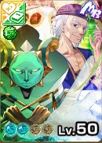
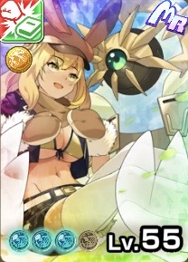
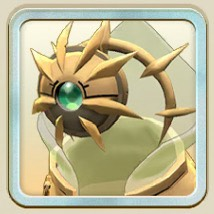
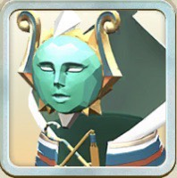

創造のモンスター
創造の血統から探す
「技」の数が出ている血統は技一覧のページへ、それ以外はこのページの血統別モンスターへ移動します。


創造のデータ
血統ごとの体数と技
オーラ別の体数
| 赤 | 青 | 黄 | 黒 | 白 | 緑 | 限定 |
|---|---|---|---|---|---|---|
| 6 | 4 | 7 | 5 | 6 | 9 | 17 |
最近追加されたモンスター
運営者のひとこと
最終更新：
おすすめ血統
ガリ種
編成しているオーラ技の数に応じて必中Lv3や業物Lv10などの強力な効果を簡単に得ることができる。創造の調律&ダラスサポートに加え、緑はルピナスの能力、黄色はロボトルファイトが組み合わさるとずっと技を打ち続けるような挙動も可能。
ヒノトリ種（ブリザード）、ユグドラシル種（ウルズ）
師匠カードエイルの能力やMRリムルの俺は喰らうものだ、MR友人クリスの無垢な寝顔、SSRライバルシエナのプリンセスオーラなどをフル活用できるため、環境に多い幻霊のアーク種や赤オーラのタマモノマエに対し有利に立ち回ることが可能。
創造のアシストカード
師匠カード
モン類MR


血統別モンスター
ガリ（12体）

・主血統ガリ×副血統ヘンガー ・原作にはいなかったがデザインは相変わらずすばらしい ・技登録もランク3,4,5とめちゃくちゃ恵まれているためガリ推しは必ずゲットしたい ・クロノトリックがあまりにも強い ・強くなるための環境が整ってきた

・2025年6月の神殿祭（夏）に登場。ライモンオリジナルのガリ種レアモン。 ・エジプト神話における冥界の神様がモチーフ。同じ出典元のジョーカー種のラーと、ゴーレム種のアメンホテプとはやはり仲が良いらしく、ライモン世界のマンディー砂漠地方でも特別崇められている存在との事。
ヒノトリ（8体）


ユグドラシル（8体）

・2025年6月のスタフェス（夏）にて登場。 ・名前の通りケーキを模した意匠とデザインで、どこかのパティスリーのゆるキャラとして居そうな可愛らしいチャーミングな表情をしたモンスター。たぶん同時実装のウェディングに添える為のケーキという出オチ。

・オーバーロードコラボ後半ガチャ実装。ユグドラシル種。 ・どう見てもジャンガリアンハムスターの見た目だが、ハムスケは原作では森の賢王と呼ばれる伝説の魔獣で性別はメスである。上に乗っているチビアインズ様もといモモンが剣技を繰り出す様は某スラ〇ムナイト感を彷彿とさせるサイズ感。


メタルナー（5体）


ザン（4体）

・3周年アニバにて新血統ザン種実装と同時にSUPER WANTEDのフレンド再生にて登場した☆2モンスター。 ・副血統ディノの緑オーラのシンだが、PS2版モンスターファームにて登場していたれっきとした原作出典のモンスター。

・3周年超神殿祭にて実装された2体目のガチャ限ザン種。 ・初出はPS2版モンスターファームより。海岸ゴート派生のザン種で高い丈夫さとすばやさを併せ持つ。以降の作品では副血統アローヘッド派生として登場する。

・2026年3月の3周年アニバーサリーで実装された原作からの待望のザン種純血種。 ・原作MF3（PS2版MF）がデビューと勘違いされやすいが、初出はテクモの2000年発売のゲームボーイカラー専用ソフト「ソロモン」というアクションパズルゲーから。

・2026年7月の超スタフェス(夏)にて登場したロード種のザン。創造師匠エイルと共に堂々の実装。 ・モチーフは名前の通り戦国の世に活躍した隠密集団、風魔忍者から。